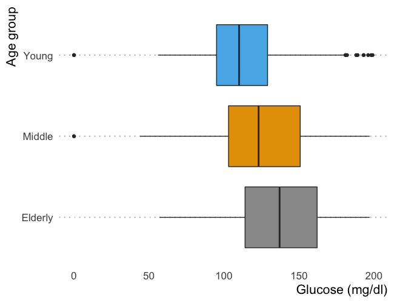

options(repos = list(CRAN = "http://cran.rstudio.com/"))Manage functionality as a package
rrtools research compendium structure is based on R packages.
The R package structure can help with providing a logical organisation of files, by providing a set of standard locations for certain types of files.
In RStudio we use the Build pane when working with packages, which includes a variety of tools for building, documenting, and testing packages. This will appear if Rstudio recognizes the project as an R package.
Setup data
Copy data to data/
To begin, we will copy diabetes.csv from the workshop materials you downloaded in rrtools-wkshp-materials-master/ to the sub-folder analysis/data/raw_data/ in rrcompendium
Your data folder should now look like this:
analysis/data
├── DO-NOT-EDIT-ANY-FILES-IN-HERE-BY-HAND
├── derived_data
└── raw_data
└── diabetes.csvInspect analysis.R file
Next we will open analysis.R in the workshop materials and run the code. The script has some initial setup (mainly installations), then loads the data, groups one of the columns for plotting and then plots the results, which generates a novel figure.
analysis.R
First, its best to make sure there’s a CRAN mirror that will be used to install packages. If you don’t, you could get an error basically saying that CRAN isn’t set…
# Install pacman
install.packages("pacman")
# Install and/or load necessary packages
pacman::p_load(ggthemes,
here,
tidyverse)
# Making some global ggplot() theme additions
# Set global ggplot() theme
theme_set(theme_pubclean(base_size = 16))
# Remove legend
theme_update(legend.position = "none")
# Shift axes title to their relative right
theme_update(axis.title = element_text(hjust = 1))
# Remove axes ticks
theme_update(axis.ticks = element_blank())
# Colorblind friendly palette
cbp1 <- c("#999999", "#E69F00", "#56B4E9", "#009E73",
"#F0E442", "#0072B2", "#D55E00", "#CC79A7")# load-data
data <- read_csv(here::here("analysis", "data", "raw_data", "diabetes.csv")) |>
# Add a categorical group
mutate(Age = ifelse(Age >= 21 & Age <= 30, "Young",
ifelse(Age > 30 & Age <= 50,
"Middle",
"Elderly")),
Age = as.character(Age))# Plot Glucose vs. Age group
data |>
ggplot(aes(x = Glucose, y = fct_rev(Age), fill = Age)) +
geom_boxplot() +
xlab("Glucose (mg/dl)") +
ylab("Age group") +
scale_fill_manual(values = cbp1)
Now we will create a function to replace the grouping step in the analysis, document it, check it, test and make it available as a package!
Create a package function
Create .R function script
First we need an .R file to write our function in.
To create or edit .R files in the R/ directory, we can use:
usethis::use_r("process-data") ● Modify 'R/process-data.R'
• Call `use_test()` to create a matching test fileThis creates a file called process-data.R in the R/ directory and opens for editing.
Write function
In this file, let’s now create the function to group Age.
In particular, we can modify the following code from analysis.R
# Group data
data <- read_csv(here::here("analysis", "data", "raw_data", "diabetes.csv")) |>
mutate(Age = ifelse(Age >= 21 & Age <= 30, "Young",
ifelse(Age > 30 & Age <= 50,
"Middle",
"Elderly")),
Age = as.character(Age))into a function like so:
group_age <- function(data){
dplyr::mutate(data,
Age = ifelse(Age >= 21 & Age <= 30, "Young",
ifelse(Age > 30 & Age <=
50, "Middle",
"Elderly")),
Age = as.character(Age))
}This takes a dataframe of the data as input and outputs a dataframe with the values of Age grouped for plotting.
Now, to have our function exported as part of the rrcompendium package, we need to document it using Roxygen2.
Document function
Documentation is one of the most important aspects of good, reproducible code. Roxygen2 provides a documentation framework in R.
Roxygen2 documentation
Roxygen2 allows us to write specially-structured comments preceding each function definition. These are processed automatically to produce .Rd help files for our functions and control which are exported to the package NAMESPACE.
See the Generating Rd files roxygen2 vignette or Karl Broman’s blog post on writing Roxygen2 documentation for further details.
Insert Roxygen skeleton
In Rstudio, you can insert a Roxygen skeleton by placing the cursor anywhere in the definition of a function, then clicking:
Code > Insert Roxygen SkeletonApplying this to our function results in this Roxygen skeleton:
#' Title
#'
#' @param data
#'
#' @return
#' @export
#'
#' @examples
group_age <- function(data){
dplyr::mutate(data,
Age = ifelse(Age >= 21 & Age <= 30, "Young",
ifelse(Age > 30 & Age <=
50, "Middle",
"Elderly")),
Age = as.character(Age))Complete Roxygen documentation
Roxygen comments start with #' so we can use regular comments for other purposes.
Title and description
The first line is the title of the function.
The title is followed by a blank #' line and then a longer description summarizing what the function does, which must be single paragraph.
So for our function we could write something like this:
#' Group age variable
#'
#' Group age variable in dataframe containing data from file
#' `diabetes.csv`Further function details are documented in Roxygen using tags like @tag.
Function parameters (arguments)
@param tags names are automatically extracted from the function for each function argument and document argument descriptions. We can document our single argument by editing the skeleton:
#' @param data dataframe containing data from file
#' `diabetes.csv`Function output
We use tag @return to describe what the function returns:
#' @return `data` with variable `Age` grouped for
#' plottingExport function
@export tells Roxygen2 to add this function as an export in the NAMESPACE file, so that it will be accessible available for use after package installation.
The Roxygen skeleton includes the @export tag by default. You can remove it for internal functions that will only be available within the NAMESPACE. You can access internal functions of a package using <package_name>:::
Provide examples
The @examples tag provides executable R code showing how to use the function in practice. This is a very important part of the documentation because many people look at the examples before reading anything else.
We’ll skip this for now but come back to it a bit later. Remove the @examples tag for now.
The completed function documentation should look something like this:
#' Group age variable
#'
#' Group age variable in dataframe containing data from file
#' `diabetes.csv`
#' @param data dataframe containing data from file
#' `diabetes.csv`
#' @return `data` with variable `Age` grouped for
#' plotting
#' @export
group_age <- function(data){
mutate(data,
Age = ifelse(Age >= 21 & Age <= 30, "Young",
ifelse(Age > 30 & Age <= 50, "Middle",
"Elderly")),
Age = as.character(Age))
}Let’s take a renv::snapshot()!
renv::snapshot()Build and install package
Build Roxygen documentation
Now that we’ve annotated our source code we can build the documentation either by clicking on More > Document in the RStudio Build panel or from the console using:
devtools::document() This is a wrapper for the roxygenize() function from the roxygen2 package. This builds the .Rd help files and populates the NAMESPACE
The man/ directory will appear and contain an .Rd file for recode_system.
man
└── group_age.Rdand the NAMESPACE now contains an export() entry for recode_system:
# Generated by roxygen2: do not edit by hand
export(group_age)Install package
The usual workflow for package development is to:
Make some changes
Build and install the package
Unload and reload the package (often in a new R session)
The best way to install and reload a package in a fresh R session is to use the 🔨 Install command tab in the Build panel which performs several steps in sequence to ensure a clean and correct result:
Unloads any existing version of the package (including shared libraries if necessary).
Builds and installs the package using R CMD INSTALL.
Restarts the underlying R session to ensure a clean environment for re-loading the package.
Reloads the package in the new R session by executing the library function.
Running the 🔨 Install command on our package results in this output in the Build panel output:
* installing to library ‘/Users/gregchism/Library/R/x86_64/4.1/library’
* installing *source* package ‘rrcompendium’ ...
** using staged installation
** R
** byte-compile and prepare package for lazy loading
Installing package into ‘/Users/gregchism/Library/R/x86_64/4.1/library/00LOCK-rrcompendium/00new’
(as ‘lib’ is unspecified)
trying URL 'http://cran.rstudio.com/bin/macosx/contrib/4.1/pacman_0.5.1.tgz'
Content type 'application/x-gzip' length 380131 bytes (371 KB)
==================================================
downloaded 371 KB
The downloaded binary packages are in
/var/folders/c0/w15tbmpn36d7jj_tpjm_sz9c0000gn/T//RtmpB7b61P/downloaded_packages
** help
*** installing help indices
** building package indices
** testing if installed package can be loaded from temporary location
** testing if installed package can be loaded from final location
** testing if installed package keeps a record of temporary installation path
* DONE (rrcompendium)
install.packages("pacman")and
Restarting R session…in the console.
We can inspect the resulting documentation for our function using ?group_age
Another renv::snapshot()!
renv::snapshot()Check package
Automated checking
An important part of the package development process is R CMD check. R CMD check automatically checks and detects many common problems that can be difficult to find ourselves.
To check our package, we can use one of three methods:
Use
devtools::check()(my recommended way)Press Ctrl/Cmd + Shift + E
Click on the ✅Check tab in the Build panel.
This:
Ensures that the documentation is up-to-date by running
devtools::document().Bundles the package before checking it.
More info on checks here.
Both these run R CMD check which return three types of messages:
ERRORs: Severe problems that you should fix regardless of whether or not you’re submitting to CRAN.
WARNINGs: Likely problems that you must fix if you’re planning to submit to CRAN (and a good idea to look into even if you’re not).
NOTEs: Mild problems. If you are submitting to CRAN, you should strive to eliminate all NOTEs, even if they are false positives.
Let’s Check our package:
devtools::check()N checking R code for possible problems (2.4s)
group_age: no visible global function definition for ‘mutate’
group_age: no visible binding for global variable ‘Age’
Undefined global functions or variables:
mutate Age
✔ checking Rd files ...
✔ checking Rd metadata ...
✔ checking Rd line widths ...
✔ checking Rd cross-references ...
✔ checking for missing documentation entries ...
✔ checking for code/documentation mismatches (426ms)
✔ checking Rd \usage sections (563ms)
✔ checking Rd contents ...
✔ checking for unstated dependencies in examples ...
─ checking examples ... NONE
✔ checking for non-standard things in the check directory
✔ checking for detritus in the temp directory
See
‘/private/var/folders/c0/w15tbmpn36d7jj_tpjm_sz9c0000gn/T/RtmplWzWzK/rrcompendium.Rcheck/00check.log’
for details.
── R CMD check results ─────────────────────────────────────────── rrcompendium 0.0.0.9000 ────
Duration: 10.3s
❯ checking R code for possible problems ... NOTE
group_age: no visible global function definition for ‘mutate’
group_age: no visible binding for global variable ‘Age’
Undefined global functions or variables:
mutate Age
0 errors ✔ | 0 warnings ✔ | 1 note ✖There are a analysis.R. Let’s start troubleshooting with:
group_age: no visible global function definition for ‘mutate’We are using a dplyr functions in our function, mutate(). However, we have not specified that they are imported from the dplyrNAMESPACE so the checks look for functions with those names in our package (rrcompendium) and can’t find anything.
Add namespace to function notation
To specify the namespace of a function we use the notation <package_name>::<function_name>, so we need to update this.
group_age <- function(data){
dplyr::mutate(data,
Age = ifelse(Age >= 21 & Age <= 30, "Young",
ifelse(Age > 30 & Age <=
50, "Middle",
"Elderly")),
Age = as.character(Age))
}Let’s run Check again:
W checking dependencies in R code ...
'::' or ':::' import not declared from: ‘dplyr’
✔ checking S3 generic/method consistency (421ms)
✔ checking replacement functions ...
✔ checking foreign function calls ...
N checking R code for possible problems (2.5s)
group_age: no visible binding for global variable ‘Age’
Undefined global functions or variables:
Age
✔ checking Rd files ...
✔ checking Rd metadata ...
✔ checking Rd line widths ...
✔ checking Rd cross-references ...
✔ checking for missing documentation entries ...
✔ checking for code/documentation mismatches (446ms)
✔ checking Rd \usage sections (567ms)
✔ checking Rd contents ...
✔ checking for unstated dependencies in examples ...
─ checking examples ... NONE
✔ checking for non-standard things in the check directory
✔ checking for detritus in the temp directory
See
‘/Users/gregchism/Library/Mobile Documents/com~apple~CloudDocs/Desktop/rrcompendium.Rcheck/00check.log’
for details.
── R CMD check results ──────────────────────────── rrcompendium 0.0.0.9000 ────
Duration: 10.6s
❯ checking dependencies in R code ... WARNING
'::' or ':::' import not declared from: ‘dplyr’
❯ checking R code for possible problems ... NOTE
group_age: no visible binding for global variable ‘Age’
Undefined global functions or variables:
Age
0 errors ✔ | 1 warning ✖ | 1 note ✖Add dependency
In this next round of checks, the note about undefined global functions mutate and recode is gone, but now there’s a warning regarding '::' or ':::' import not declared from: 'dplyr'. It’s because we want to import functions from dplyr but the package needs to be a dependency in the Imports field of the DESCRIPTION file.
We can add dplyr to Imports with:
usethis::use_package("dplyr") ✔ Setting active project to '/Users/gregchism/Library/Mobile Documents/com~apple~CloudDocs/Desktop/rrcompendium'
✔ Adding 'dplyr' to Imports field in DESCRIPTION
• Refer to functions with `dplyr::fun()`and the DESCRIPTION file now includes
Imports:
bookdown,
dplyr,
hereRunning Check again, the warning is now gone and we are left with the minor note:
❯ checking R code for possible problems ... NOTE
group_age: no visible binding for global variable ‘Age’
Undefined global functions or variables:
Age
0 errors ✔ | 0 warnings ✔ | 1 note ✖We’ll ignore this note for now. It results from the non-standard evaluation used in dplyr functions. See the Programming with dplyr vignette for more.
Test out function
Run 🔨 Install to ensure the installed package is up to date.
Then let’s read in some data and test out our function:
library(rrcompendium)
data <- readr::read_csv(here::here("analysis", "data",
"raw_data", "gillespie.csv")) Rows: 768 Columns: 9
── Column specification ───────────────────────────────────────────────────────────────
Delimiter: ","
dbl (9): Pregnancies, Glucose, BloodPressure, SkinThickness, Insulin, BMI, Diabetes...data# A tibble: 768 × 9
Pregnancies Glucose BloodPressure SkinThickness Insulin BMI Diabet…¹ Age Outcome
<dbl> <dbl> <dbl> <dbl> <dbl> <dbl> <dbl> <dbl> <dbl>
1 6 148 72 35 0 33.6 0.627 50 1
2 1 85 66 29 0 26.6 0.351 31 0
3 8 183 64 0 0 23.3 0.672 32 1
4 1 89 66 23 94 28.1 0.167 21 0
5 0 137 40 35 168 43.1 2.29 33 1
6 5 116 74 0 0 25.6 0.201 30 0
7 3 78 50 32 88 31 0.248 26 1
8 10 115 0 0 0 35.3 0.134 29 0
9 2 197 70 45 543 30.5 0.158 53 1
10 8 125 96 0 0 0 0.232 54 1
# … with 758 more rows, and abbreviated variable name ¹DiabetesPedigreeFunctiongroup_age(data) # A tibble: 768 × 9
Pregnancies Glucose BloodPressure SkinThickness Insulin BMI Diabet…¹ Age Outcome
<dbl> <dbl> <dbl> <dbl> <dbl> <dbl> <dbl> <chr> <dbl>
1 6 148 72 35 0 33.6 0.627 Elde… 1
2 1 85 66 29 0 26.6 0.351 Elde… 0
3 8 183 64 0 0 23.3 0.672 Elde… 1
4 1 89 66 23 94 28.1 0.167 Elde… 0
5 0 137 40 35 168 43.1 2.29 Elde… 1
6 5 116 74 0 0 25.6 0.201 Elde… 0
7 3 78 50 32 88 31 0.248 Elde… 1
8 10 115 0 0 0 35.3 0.134 Elde… 0
9 2 197 70 45 543 30.5 0.158 Elde… 1
10 8 125 96 0 0 0 0.232 Elde… 1
# … with 758 more rows, and abbreviated variable name ¹DiabetesPedigreeFunctionIt works! 🎉
Time for another renv::snapshot()!
renv::snapshot()Test function
Testing is a vital part of package development. It ensures that our code does what you want it to do.
Once we have testing framework, the workflow is straightforward:
- Modify your code or tests.
- Test your package with Ctrl/Cmd + Shift + T or
devtools::test(). - Repeat until all tests pass.
Create a test file
Similar to usethis::use_r() for package source code files, we can use usethis::use_test() to create the framework for our tests.
usethis::use_test(name = "process-data")✔ Adding 'testthat' to Suggests field in DESCRIPTION
✔ Setting Config/testthat/edition field in DESCRIPTION to '3'
✔ Creating 'tests/testthat/'
✔ Writing 'tests/testthat.R'
✔ Writing 'tests/testthat/test-process-data.R'
• Modify 'tests/testthat/test-process-data.R'This will:
- Create a
tests/testthatdirectory. - Add testthat to the
Suggestsfield in theDESCRIPTION. - Create a file
tests/testthat.Rthat runs tests whenR CMD checkruns. - Create a test file in
tests/testthat/appendingtest-to thenameargument.
testthat.R
The testthat.R file runs all the tests.
You can use this file to load any additional packages required for testing (although explicit NAMESPACE notation :: as in package source code is still preferable to ensure accuracy of tests)
library(testthat)
library(rrcompendium)
test_check("rrcompendium")test-process-data
usethis::use_test() also creates and opens test file test-process-data and pre-populates it with an example test.
test_that("multiplication works", {
expect_equal(2 * 2, 4)
})There are two elements to any test:
desc: test name. Names should be kept as brief as possible, as they are often used as line prefixes.code: test code containing expectations
Create test data
To test our function we’ll need some data. The best way is to include an example dataset, in this case we’ll just use diabetes.csv. However we need to store the data in a directory that is still accessible when the package is built.
Anything in the .Rbuildignore file will be ignored during building and installation, which currently ignores the entire analysis/ directory, including our data. Note that the order might be different for you, but it shouldn’t matter.
^rrcompendium\.Rproj$
^\.Rproj\.user$
analysis
^LICENSE\.md$
^README\.Rmd$
^README-.*\.png$
^CONDUCT\.md$
^CONTRIBUTING\.md$
^runtime\.txt$We can make files available after install by including them in an inst/ directory.
When a package is installed, everything in inst/ is copied into the top-level package directory. You are free to put anything you like in inst/ with one caution: because inst/ is copied into the top-level directory, you should never use a sub-directory with the same name as an existing directory.
This means that you should generally avoid inst/build, inst/data, inst/demo, inst/exec, inst/help, inst/html, inst/inst, inst/libs, inst/Meta, inst/man, inst/po, inst/R, inst/src, inst/tests, inst/tools, and inst/vignettes.
Create inst/testdata/ directory
Let’s create an inst/ directory and within it a testdata/ sub-directory to save our example data.
dir.create(here::here("inst", "testdata"), recursive = T)Copy example data
Now let’s make a copy of diabetes.csv into the inst/testdata/ directory:
file.copy(from = here::here("analysis", "data",
"raw_data", "diabetes.csv"),
to = here::here("inst", "testdata"))You should now have an inst folder containing the following files
inst
└── testdata
└── diabetes.csvInstall
Run 🔨 Install so that testdata/ is included in the build.
We can now use system.file(), which finds the full names of files in packages, in our test script to load our test data set.
system.file(…, package = "my_package") It uses anything supplied to … to build the path to the file, much like here::here().
So in test-process-data.R, we can now write:
context("test-process-data")
data <- readr::read_csv(system.file("testdata",
"gillespie.csv",
package = "rrcompendium"))Let’s take a step back and make sure all of these package dependencies are in out DESCRIPTION.
rrtools::add_dependencies_to_description()Our Imports should look like this:
Imports:
bookdown,
dplyr,
here,
knitr (>= 1.39),
pacman (>= 0.5.1),
readr (>= 2.1.2),
rmarkdown (>= 2.14)We can also use this dataset to provide a working example of recode_system(data) in the function documentation. So let’s go back to R/process-data.R and add an example to our documentation
#' @examples {
#' data <- readr::read_csv(system.file("testdata", "diabetes.csv",
#' package = "rrcompendium"))
#' recode_system_size(data)
#' }Document and the Install to update package.
Write test
Let’s now write a couple of tests.
Test grouping
First let’s test that grouping works, by checking the unique values of Age after running group_age. Add the following to test-process-data.R:
test_that("grouping works", {
expect_equal(unique(group_age(data)$Age),
c("Young", "Middle", "Elderly"))
})Test dimensions
Let’s also test that the original dimensions of data are preserved after running our function. Add the following to test-process-data.R:
test_that("data dims preserved", {
expect_equal(dim(group_age(data)),
dim(data))
})The complete test-process-data.R file should look like this:
data <- readr::read_csv(system.file("testdata",
"diabetes.csv",
package = "rrcompendium"))
test_that("grouping works", {
expect_equal(unique(group_age(data)$Age),
c("Middle", "Young", "Elderly"))
})
test_that("data dims preserved", {
expect_equal(dim(group_age(data)),
dim(data))
})Since we are using read_csv from the readr package, if you didn’t use rrtools::add_dependencies_to_description() above, you will need to add readr to the dependencies.
rrtools::add_dependencies_to_description()Check that your Imports and Suggests in the DESCRIPTION looks like this:
Imports:
bookdown,
dplyr,
here,
knitr (>= 1.39),
pacman (>= 0.5.1),
readr (>= 2.1.2),
rmarkdown (>= 2.14)
Suggests:
devtools,
git2r,
testthat (>= 3.0.0)Once our tests are saved, we’re ready to test our package! 😃
Test package
We can test our package through:
More > Test Packagein the Build panelCtrl/Cmd + Shift + Tdevtools::test()
Failure (test-process-data.R:8:3): grouping works
unique(group_age(data)$Age) (`actual`) not equal to c("Young", "Middle", "Elderly") (`expected`).
`actual`: "Middle" "Young" "Elderly"
`expected`: "Young" "Middle" "Elderly"
───────────────────────────────────────────────────────────────────────
══ Results ════════════════════════════════════════════════════════════
Duration: 0.2 s
[ FAIL 1 | WARN 0 | SKIP 0 | PASS 1 ]Interesting… There’s a weird character order Failure. In this case, let’s just mirror what the actual is as in the expected.
data <- readr::read_csv(system.file("testdata",
"diabetes.csv",
package = "rrcompendium"))
test_that("grouping works", {
expect_equal(unique(group_age(data)$Age),
c("Middle", "Young", "Elderly"))
})
test_that("data dims preserved", {
expect_equal(dim(group_age(data)),
dim(data))
})══ Results ════════════════════════════════════════════════════════════
Duration: 0.1 s
[ FAIL 0 | WARN 0 | SKIP 0 | PASS 2 ]Our tests pass!!
🎉 Now every time you check your package, the test will also be run automatically.
A final renv::snapshot()!
renv::snapshot()Let’s commit our work to GitHub and move on.